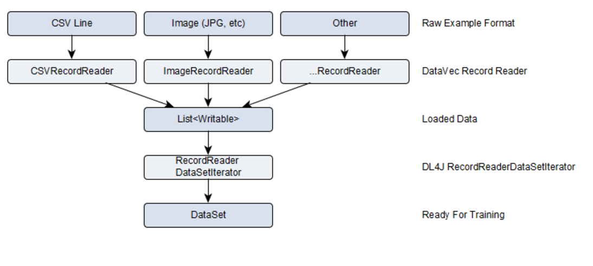
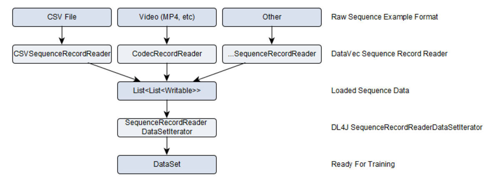

ETL and Vectorization
Table of Contents
-- this chapter sets up datavec needed for UCI sequence data lab
Concepts in ETL: DataVec
What is ETL?
- Extract
- Pull data from a source
* Logs * Another Database
- Pull data from a source
- Transform
- Convert each column with a function
- Filter some columns out
- Load
- Create a new dataset / table
- Setup to be used by another application
What is Vectorization?
- Convert each column in a table/dataset into a floating point number
- Four Attribute Types
- Nominal
- Ordinal
- Interval
- Ratio
- Raw Text has many complications
- Bag of Words / Counts
- TF-IDF
- Sometimes we need to enumerate the options for the column
- Option A -> 0.0, Option B -> 1.0, …
Examples of Raw Data Sources
- Raw text documents
- A file containing a text record per line
- Binary timeseries data in custom file format
- Pre-processed datasets with a mixture of numeric and string attributes
- Image Files
- Audio Files
- Video Files
What is DataVec?
- Library for handling machine learning data / ETL
- (Extract, Transform, Load)
- Goal is to simplify the preparation and loading of raw data into a format ready for use for machine learning
- Also provides vectorization functionality
- DataVec includes functionality for loading
- Tabular (CSV, etc)
- Image
- Time series
Major Facets of DataVec
- Mode of Execution
- Local
- Spark
- Type of Data
- Tabular (“database table”)
- Sequential (“Timeseries”)
DataVec Abstractions
- Writable
- Interface representing a piece of data
- Example: DoubleWritable
- RecordReader
- Interface to provide mechanism to load data from raw file format
- Converts data to List
- RecordReaderDataSetIterator
- Conversion of List
to DataSet
- Conversion of List
DataVec Processing Pipelines

DataVec Handling Sequences
- More complex data type
- More complicated to store / load
- Move from List
(a vector) - To a series of vectors represented by:
- List
- List
- Represents the input of a single sequence
- To a series of vectors represented by:
- More complex input, but still trying to produce a DataSet
- Input is now a Tensor!
DataVec Sequence Processing Pipelines

Sequences and Local datavec pipelines
Goal: DataSet from Local Raw Data
- Need to be able to load the raw sequence data
- Read the file format
- Match up labels to features
- Perform any normalization during vectorization
- If the input file matches a record reader
- We can leverage that code to build our NDArrays and DataSets
- If not, we need to write custom code
- to build the DataSet objects
Example Data Layout
- Suitable for CSVSequenceRecordReader for sequence input
- One timeseries per file
- Separate file for labels
- Example
- Features for series 0:
- Train/features/0.csv
- Label for series 0:
- Train/labels/0.csv
- Features for series 0:
- This dataset is univariate (one column in CSV file)
High-Level Pattern
- Load data from File:
- CSVSequenceRecordReader
- Dealing with file format:
- NumberedFileInputSplit
- We handle raw sequence data to DataSet (tensor) conversion with:
- SequenceRecordReaderDataSetIterator
Local Code Example
//Note that we have 450 training files for features: train/features/0.csv through train/features/449.csv
SequenceRecordReader trainFeatures = new CSVSequenceRecordReader();
trainFeatures.initialize(new NumberedFileInputSplit(featuresDirTrain.getAbsolutePath() + "/%d.csv", 0, 449));
SequenceRecordReader trainLabels = new CSVSequenceRecordReader();
trainLabels.initialize(new NumberedFileInputSplit(labelsDirTrain.getAbsolutePath() + "/%d.csv", 0, 449));
int miniBatchSize = 10;
int numLabelClasses = 6;
DataSetIterator trainData = new SequenceRecordReaderDataSetIterator(trainFeatures, trainLabels, miniBatchSize, numLabelClasses,
false, SequenceRecordReaderDataSetIterator.AlignmentMode.ALIGN_END);
//Normalize the training data
DataNormalization normalizer = new NormalizerStandardize();
normalizer.fit(trainData); //Collect training data statistics
trainData.reset();
//Use previously collected statistics to normalize on-the-fly. Each DataSet returned by 'trainData' iterator will be normalized
trainData.setPreProcessor(normalizer);
Reading Data From File
- We need a record reader
- Start with: SequenceRecordReader
- Initialize with a specific subclass of input split
- This deals with the specific file format
- Supported data formats
- CSVSequenceRecordReader
- Reads CSV based data from CSV Text Files
- CSVNLinesSequenceRecordReader
- version of CSV sequence reader: each sequence is exactly N lines long, all in one file, one after the other
- RegexSequenceRecordReader
- Good for log data
- CollectionSequenceRecordReader
- Mainly for debugging/testing
- CSVSequenceRecordReader
Dealing w File Formats
- Supported File Formats
- CSV Text Files
- Numbered Files: NumberedFileInputSplit
- Ex: numbered files in directory -> NumberedFileInputSplit
- Numbered Files: NumberedFileInputSplit
- CSV Text Files
- Notes
- Any input split with URIs: FileSplit for example. Totally fine for "one sequence per file" cases
- BUT: be careful of alignment for features and labels in separate files. Something like NumberedFileInputSplit is better for this
- Any input split with URIs: FileSplit for example. Totally fine for "one sequence per file" cases
Building a DataSet Iterator
- Why?
- Need a place that takes raw data from possibly multiple files + label data and places it all in a single DataSet object
- Base Class:
- DataSetIterator
- Sequence Specific Class:
- SequenceRecordReaderDataSetIterator
Handling Normalization
DataSetIterator trainData = …
DataNormalization normalizer = new NormalizerStandardize();
// collect statistics
normalizer.fit(trainData);
trainData.reset();
// use statistics to vectorize data
trainData.setPreProcessor(normalizer);
Vectorization Techniques for Normalization
Techniques of Normalization
- When we normalize at the vector level
- most of the time this ends up being a division of the vector by a norm (in this case, “length”) of the vector.
- Standardize
- ZMUV
- Min-Max Scaling (“feature scaling”)
- Binarization
Standardization
- When we “standardize” a vector we subtract a measure of location (minimum, maximum, median, etc)
- and then divide by a measure of scale (variance, standard deviation, range, etc).
- Zero Mean, Unit Variance
TH- show example Use degrees celsius vs farhenheit
Binarization
- Use filter to produce a feature that includes a 1 or a 0 as its value
- We set threshold on filter function as the threshold
- Where do we use it?
- [ todo ]